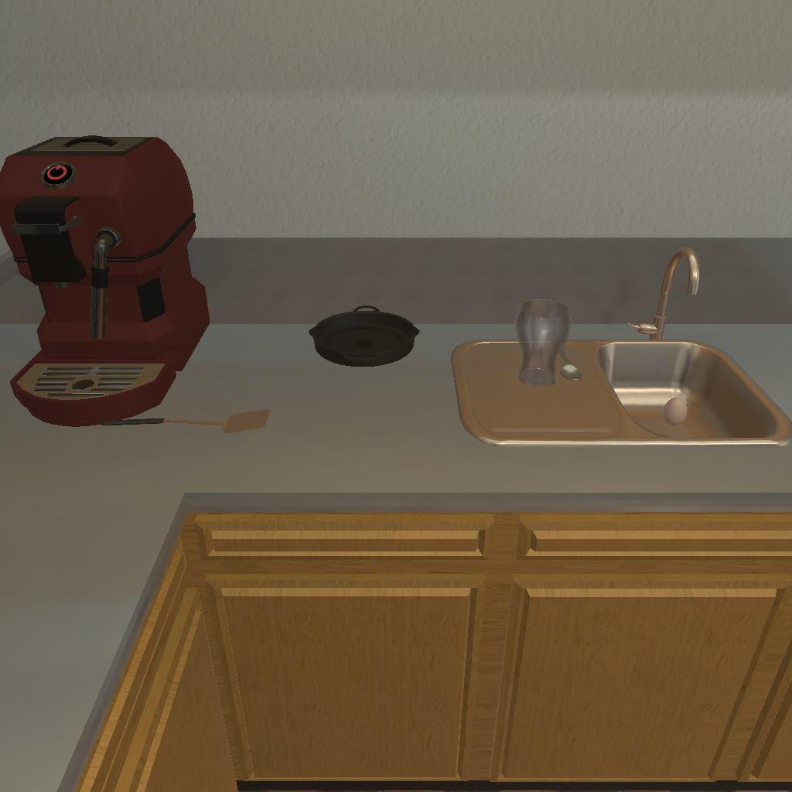

---------------------------------------------------------task: 22---------------------------------------------------------
--------------------------------------------------------------------------------------------------------------------------------------------------------------------
--------------------------------------------------------------------------------------------------------------------------------------------------------------------
Step:--------------------------------------------------------------------------8-------------------------------------------------------------------------------
----------------------------------------
VLM Prompt:
Image1:
Image2:
**Instruction**
1. Analyze the provided images to identify all visible household objects and compare the difference between images (e.h. whether the object is opened or not and taken on hand or not), focusing on those relevant to the task description "put a hot egg in countertop."
2. Use the analysis of images and the task hint "The agent must find an object of the desired type, pick it up, go to a microwave, heat the object with the microwave, then find the correct location to place it, and put it down there. The agent does not need to use the microwave button or open the microwave to heat the object, and the agent just needs to do action that is "heat the object with the microwave"." to answer the question: what is the most reasonable action in the choices for the task description "put a hot egg in countertop"?
3. Decide and write the answer using the template: The answer is: (i): , where i is the real number. If there is no desired object in images, search every place based on **Initial Observation** to find the object. And if no one is exactly correct, choose a similar answer.
**Initial Observation**
You are in the middle of a room. Looking quickly around you, you can see cabinet (1-18), countertop (1-4), sink (1), drawer (1-7), sinkbasin (1), coffeemachine (1), microwave (1), garbagecan (1), stoveburner (1-4), toaster (1), fridge (1)
**Answer Choices**
(1): go to countertop 1
(2): go to cabinet 4
(3): go to cabinet 5
(4): go to sink 1
(5): go to cabinet 6
(6): go to drawer 1
(7): go to drawer 2
(8): go to sinkbasin 1
(9): go to cabinet 7
(10): go to cabinet 8
(11): go to coffeemachine 1
(12): go to microwave 1
(13): go to cabinet 9
(14): go to countertop 2
(15): go to cabinet 10
(16): go to drawer 3
(17): go to drawer 4
(18): go to garbagecan 1
(19): go to drawer 5
(20): go to cabinet 11
(21): go to cabinet 12
(22): go to cabinet 13
(23): go to cabinet 14
(24): go to stoveburner 1
(25): go to countertop 3
(26): go to stoveburner 2
(27): go to stoveburner 3
(28): go to stoveburner 4
(29): go to drawer 6
(30): go to cabinet 15
(31): go to cabinet 16
(32): go to cabinet 17
(33): go to cabinet 18
(34): go to toaster 1
(35): go to drawer 7
(36): go to countertop 4
(37): go to fridge 1
(38): open cabinet 3
(39): close cabinet 3
(40): examine cabinet 3
**Answer**
Let's think step by step by following the instructions.
----------------------------------------
----------------------------------------
Original Response:
Image Analysis:
- In Image1, we can see the closed cabinets, which give us no information about their contents.
- In Image2, we see a countertop with a coffee machine, a sink with a faucet, and an egg in the sink basin.
Task Hint Analysis:
- The task requires the agent to find an egg, heat it with a microwave, and then place it on the countertop.
- There is no need to interact with the microwave buttons or door; the agent just needs to perform the action of heating the egg with the microwave.
Given the Initial Observation of the room, we know there is a microwave and the egg is already identified on the sink basin in Image2. The agent should pick up the egg, heat it, and place it on the countertop.
Based on the provided images and the task hint, the most reasonable actions in sequence would be:
1. go to sinkbasin 1 to pick up the egg,
2. go to microwave 1 to heat the egg, and
3. go to countertop 1 to put the hot egg.
The answer choice closest to the first step of this sequence is:
The answer is: (8): go to sinkbasin 1
----------------------------------------
----------------------------------------
>>> Refine Original VLM Response and Get Pure Action: go to sinkbasin 1
----------------------------------------
-----------------------------------------------------------------
Running time: 12.454243659973145 seconds
Total Money: 11.175310000000001
-----------------------------------------------------------------
-----------------------------------------------------------------
Text Observation:You arrive at loc 10. On the sinkbasin 1, you see a pan 1, a cup 1, a peppershaker 1, a faucet 1, a spoon 1, a egg 1, and a kettle 1.
-----------------------------------------------------------------
UNSUCCEED